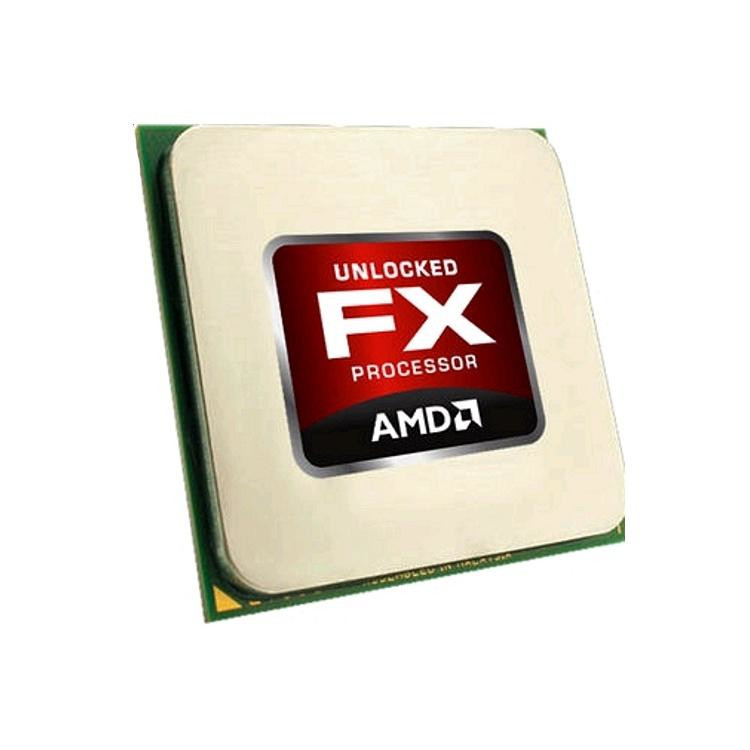

Об AMD FX
AMD FX - это процессор, вышедший в 2011 году. Благодоря низкой производительности на ядро процессор не мог конкурировать с процессорами от Intel, такими как Sandy Bridge.
Однако, потом когда игры научились использовать 8 потоков, FX показывает хороший результат, особо если его разогнать